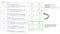
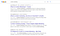

Many search results like THIS will change

Every time a Google algorithm update is rolled out there always changes in the ordering of the proposed result for each keyword. A Google update is planned to be live in May 2021. This update will integrate Core Vitals Web metrics which are metrics that tell how the website's usability is on Desktop and Mobile by measuring load speed, First Time to Interaction, First Contentful Paint, and others. The proliferation of third-party applications using Javascript to enrich web content and the higher resolution of images made websites make a lot of requests to different servers increasing page loads and making users spend more on data. It seems that this update aims to fix these issues by taking into account these metrics in order to incite website owners to make more effort for delivering a better User Experience.
For example, give the keyword “content marketing” here is the result with the CVW score. the First Gauge is the score for mobile and the second is for Desktop.

